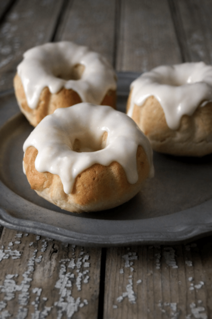

Sweetrolls
Description
Don't let anyone steal your sweetroll ever again. Instead of guarding your hard-won baked goods against bandits and that pesky Thieves Guild, now you can bake them in the quiet safety of your own home with no one the wiser.
Ingredients
- 3/4 cup warm milk
- 2 Tbs. honey
- Pinch of salt
- 2 tsp. dry active yeast
- 3 Tbs. butter
- 1 egg
- 1 ½ cups flour
For the frosting
- 2 Tbs. cream cheese, softened
- 1 Tbs. unsalted butter, softened
- 2 Tbs. heavy cream
- 1/2 cup powdered sugar
Steps
- Set oven to 350f. combine the warm milk and honey, stirring until the honey has dissolved. add the salt and yeast, followed by the remaining ingredients. mixing completely until you have a smooth batter. spoon evenly into a 5” miniature bundt pan. allow to rise for 30 minutes, then bake for 15 minutes.
- While the rolls bake, make up the frosting by creaming together the cream cheese, butter, and powdered sugar. gradually add just enough heavy cream to get a smooth, thick icing that barely runs off a spoon.
- When the rolls are finished baking, allow to cool for 5 minutes in the pan, then tip out onto a cooling rack. when they are completely cooled, spoon the icing over the tops of the buns, letting it run down the sides a little.tbs. cream cheese, softened